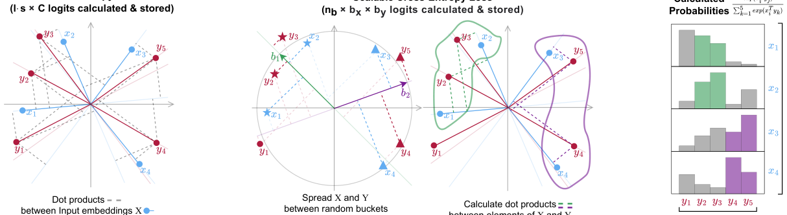
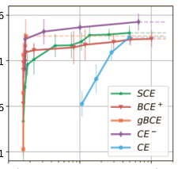

Scalable Cross-Entropy Loss for Sequential Recommendations with Large Item Catalogs (面向大物品目录序列推荐的可扩展交叉熵损失)
- 会议/期刊: RecSys 2024
- 作者与机构: Gleb Mezentsev, Danil Gusak, Ivan Oseledets, Evgeny Frolov (Skoltech / AIRI / HSE)
- 推荐链路定位: 召回（Next-Item 预测的训练目标与损失函数层）
- 研究方向: 序列与会话推荐 / 协同过滤与双塔召回
- 论文原文: https://arxiv.org/abs/2409.18721v2
- 开源代码: https://github.com/AIRI-Institute/Scalable-SASRec
TL;DR (1分钟核心速览)
序列推荐中全库 Cross-Entropy (CE) 精度最优，但 logits 张量尺寸为 \(s\cdot l\cdot C\)（128×200×10⁶ 即约 100GB），几乎不可训练；BCE/采样 CE 虽省显存却因随机负样本缺乏信息量而掉点。本文提出 SCE：用少量随机桶中心把模型输出与物品嵌入各自 top-k 分桶，仅在等长桶内计算 CE，理论上等价于对 CE 梯度最大项做 MIPS 检索。在 5 个数据集、严格全局时间戳切分 + Full-Ranking 协议下，SCE 以最多 100 倍更低的峰值显存、2.5–6.7 倍更快的训练达到或超过全库 CE（NDCG@10 最高 +17.6%）。
Background & Motivation (背景与核心矛盾)
- 主流范式: SASRec/BERT4Rec 类 Transformer 序列模型；已有工作证明 BERT4Rec 的增益主要来自全库 CE 而非双向注意力，但工业界因显存只能退回 BCE 或采样 CE（BCE+ / \(g\)BCE / CE−）。
- 前人局限: ① 随机/流行度/In-batch 负采样几乎采不到 hard negative，模型对高排名物品过度自信，无法区分唯一正类；② 基于 LSH、球聚类、Gumbel-MIPS 的近似 softmax 方法检索集合大小不一，无法批处理，作者指出这些工作几乎都没有 GPU 实验。
- 核心洞察 (Key Insight): CE 对 logit 的梯度为 \(\partial\mathcal{L}/\partial \text{logit}_{i,k}=\mathrm{softmax}_k-\mathbb{I}[k=z_{i+1}]\in[-1,1]\)，只有两类项真正驱动更新——正类 logit 被压低（标签已知，可直接算）与负类 logit 被抬高（即"最可能被误判为正"的假阳性），后者本质是一个 MIPS 问题。
- 本文切入点: 用随机桶中心把 MIPS 变成定长 top-k 分桶，从而既有选择性地只算信息量最大的 logits，又能整批在 GPU 上做稠密矩阵乘。
Method (核心方法设计)
1. 整体框架 (Overall Architecture)
输入为用户历史序列，经 SASRec 编码得每个位置的输出 \(\boldsymbol{x}_i\in\mathbb{R}^{d}\)；对每个 batch 重新采样桶中心矩阵\(B\)，分别对\(\boldsymbol{X}\)与物品表\(\boldsymbol{Y}\)做投影取 top-\(b_x\)/ top-\(b_y\)，把输出与物品"撒"进\(n_b\)个定长桶；仅在桶内做\(b_x\times b_y\) 的 logits 与 softmax，正类 logit 单独精确计算并屏蔽桶内误入的正类项，最后按输出位置做 max 聚合回传。推理阶段完全不变，仍用全库内积 + ANN 检索。
flowchart TD
A["用户历史序列"] --> B["SASRec 编码 X"]
B --> C["随机桶中心 B (含 Mix 投影)"]
D["物品嵌入 Y"] --> C
C --> E["top-bx / top-by 定长分桶"]
E --> F["桶内 logits + 正类 logit 精确计算"]
F --> G["桶内 CE，按位置 max 聚合"]
G --> H["反传更新"]
2. 关键设计拆解 (Key Designs)
- 桶化 Softmax 近似（核心算子）：痛点是把 \(s\cdot l\times C\)的 logits 全存下来。做法是采样\(B=\text{randn}(n_b,d)\)，取\(I_b=\mathrm{top}_{b_x}(BX^{\top})\)、\(J_b=\mathrm{top}_{b_y}(BY^{\top})\)，仅计算桶内\(\boldsymbol{S}_b=\boldsymbol{X}_{I_b}\boldsymbol{Y}_{J_b}^{\top}\in\mathbb{R}^{b_x\times b_y}\)。直觉是"若\(\boldsymbol{x}_i,\boldsymbol{y}_j\)都与某个随机\(\boldsymbol{b}\)高内积，则二者大概率也高内积"，而定长桶保证可批处理，最大张量由\(s\cdot l\cdot C\)降为\(n_b b_x b_y\)。
- Mix 投影缓解桶塌缩：随机 \(B\)可能让同一输出被多个桶重复选中，而 max 聚合只保留一个，导致浪费。作者借鉴随机化范围寻找器，令\(B=\Omega\boldsymbol{X}\)，\(\Omega\in\mathbb{R}^{n_b\times s\cdot l}\)：方向由数据自身线性组合而成，必然"指"向信息量大的方向，同时随机性保证多样性。实测唯一入选比例从 17.4%→39.8%（Behance）、37.1%→54.0%（Kindle），成本仅是额外一个\(n_b\times s\cdot l\) 小矩阵。
- 损失聚合与超参、开销：对每个至少进桶一次的输出 \(k\)，取其所有桶内损失的最大值（最接近全库部分和）： \(\mathcal{L}_{SCE}=\frac{1}{|\{k:L_k\neq\varnothing\}|}\sum_{k:\,L_k\neq\varnothing}\max_{(b,i)\in L_k}\Big[-\log\frac{e^{\boldsymbol{x}_k^{\top}\boldsymbol{y}_{z_{k+1}}}}{e^{\boldsymbol{x}_k^{\top}\boldsymbol{y}_{z_{k+1}}}+\sum_{j=1}^{b_y}e^{\boldsymbol{x}_k^{\top}\boldsymbol{y}_{J_{b,j}}}}\Big]\)超参取参数化\(b_x=\alpha\sqrt{s\cdot l\cdot\beta}\)、\(n_b=\alpha\sqrt{s\cdot l/\beta}\)（固定\(\alpha=2,\beta=1\)），\(\beta\) 控制"多小桶"与"少大桶"的取舍。无任何负采样器、无额外难负样本缓存，桶划分全在 no-grad 下完成，开销可忽略。
Experimental Setup & Evaluation Protocol (实验设置与评估协议)
- 数据集与预处理: 移除交互数 <5 的物品与 <20 条记录的用户（等价 5-core + 用户过滤）：
| 数据集 | #Users | #Items | #Interactions | 密度 |
|---|---|---|---|---|
| BeerAdvocate | 7,606 | 22,307 | 1,409,494 | 0.83% |
| Behance | 8,097 | 32,434 | 546,284 | 0.21% |
| Kindle Store | 23,684 | 96,830 | 1,256,065 | 0.05% |
| Yelp | 42,429 | 137,039 | 2,294,804 | 0.04% |
| Gowalla | 27,516 | 173,511 | 2,627,663 | 0.06% |
- 数据划分与防穿越: 取全部交互 0.95 分位为全局时间戳，之前为训练集；之后有交互的用户作测试用户并从训练集剔除，对其做 Leave-One-Out（最后一条测试、倒数第二条验证 + early stopping），显式规避 "recommendations from future" 泄漏。
- 排名评测协议: 无偏 Full-Ranking（全库未交互物品排序），报告 NDCG@{1,5,10}、HR@{1,5,10} 与 COV@{1,5,10}；同时记录峰值显存与训练时长。
- 对比基线与超参: backbone 统一为 PyTorch 版 SASRec（2 层 Transformer），对手为 SASRec-BCE+（多负样本）、gSASRec（\(g\)BCE 校准）、SASRec-CE−（采样 CE）与全库 CE；硬件 NVIDIA Tesla V100 16GB，各方法在"负样本数 / 桶内物品数 / batch size"网格上取 NDCG@10–显存的 Pareto 前沿比较。
Key Experimental Results (实验关键数据)
1. 主实验对比 (Main Results)
各方法在最优配置下的表现（加粗为最优，括号为 SCE 相对最强非 SCE 基线）：
| 数据集 | 指标 | BCE+ | gBCE | CE− | CE (全库) | SCE | Improv. |
|---|---|---|---|---|---|---|---|
| BeerAdvocate | NDCG@10 | 0.0160 | 0.0152 | 0.0202 | 0.0181 | 0.0209 | +3.34% |
| Behance | NDCG@10 | 0.0543 | 0.0547 | 0.0567 | 0.0546 | 0.0663 | +16.9% |
| Kindle Store | NDCG@10 | 0.0712 | 0.0647 | 0.0638 | 0.0694 | 0.0782 | +9.97% |
| Yelp | NDCG@10 | 0.0136 | 0.0138 | 0.0149 | 0.0136 | 0.0140 | −6.21% |
| Gowalla | NDCG@10 | 0.0405 | 0.0404 | 0.0396 | 0.0367 | 0.0476 | +17.6% |
| Gowalla | HR@10 | 0.0730 | 0.0731 | 0.0715 | 0.0657 | 0.0831 | +13.8% |
| Kindle Store | COV@10 | 0.1830 | 0.1647 | 0.1850 | 0.1641 | 0.2380 | +28.4% |
| BeerAdvocate | COV@10 | 0.0943 | 0.1036 | 0.1182 | 0.1149 | 0.1900 | +60.1% |
Amazon Beauty 上与近年 SOTA 对比（Leave-One-Out 协议）：SASRec-SCE NDCG@10 0.0544 / HR@10 0.0935，优于 CBiT (0.0537/0.0905)、SASRec-RECE (0.0525/0.0897)、FEARec、DuoRec 与 CL4SRec。

2. 消融实验 (Ablation Study)
| 数据集 | 指标 | w/o Mix | + Mix | 相对提升 |
|---|---|---|---|---|
| Behance | NDCG@10 | 0.0632 | 0.0667 | +5.5% |
| Behance | HR@10 | 0.1110 | 0.1166 | +5.0% |
| Behance | COV@10 | 0.215 | 0.253 | +17.8% |
| Kindle Store | NDCG@10 | 0.0748 | 0.0780 | +4.3% |
| Kindle Store | HR@10 | 0.1012 | 0.1043 | +3.1% |
| Kindle Store | COV@10 | 0.214 | 0.237 | +10.9% |
3. 关键实验发现 (Key Findings)
- "近似优于精确"在小目录也成立：BeerAdvocate/Behance 上全库 CE 并未触及显存上限（可达质量平台），但 SCE 的 NDCG@10 仍分别 +3.34% 与 +16.9%。作者归因于 SCE 同时选择了序列中信息量最大的状态，且随机化桶划分起到正则作用（未严格验证）。
- 负采样在中小目录反而更费显存：目录 ≤40K 时（ML-1M 3K、Behance 32K），全库 CE 比 BCE+/\(g\)BCE 分别省 71.9% 与 13.8% 显存；而 SCE 相对 BCE+/\(g\)BCE 在 ML-1M/Behance 上省 88.4%/88.0%，在 Gowalla（174K）上省 93.7%——"采样必然更省"的工程直觉被推翻。
- 显存-质量 Pareto 前沿整体外推：在 4/5 数据集上，SCE 用 7.8–100.2 倍更少显存达到最强对手同等质量且训练快 2.5–6.7 倍；同显存预算下 NDCG@10 提升 3.3%–17.6%。唯一例外 Yelp（最稀疏）NDCG@10 落后最好模型 6.2%，仅比同质量最快方法快 1.9 倍，说明超参启发式在极稀疏场景不稳。
Highlights & Limitations (亮点、对比与审稿批判)
- 与代表作对比: 相比 BCE+/\(g\)BCE（Klenitskiy & Vasilev、Petrov & Macdonald），SCE 不做分布校准而是直接改采样算子，把"采负样本"变成"采 logits 子块"；相比 SASRec-RECE（LSH 近似 CE），SCE 的桶定长、桶内无冗余、无需 chunk 混桶，因此可批处理并在 Amazon Beauty 上高出约 3.6% NDCG@10。
- 可迁移亮点: "定长 top-k 分桶 + max 聚合"这一模式可无痛移植到大词表 LM 的 softmax 训练、双塔召回的全库 softmax、以及任何"类别数 >> 显存"的多分类目标，且只需一次矩阵乘与 argsort。
- 审稿级局限批判: ① 桶划分与 Mix 的收益仅有经验证据，缺少对"近似误差 vs 全库 CE"的理论界；② 关键超参 \(b_y\)需按数据集与显存预算调，Yelp 上的掉点暴露了\(\alpha/\beta\) 启发式的脆弱性；③ 只测到 17 万物品量级、单一 backbone（SASRec），未验证 BERT4Rec/线性注意力或百万级目录下的实际加速比。
Rating (四维评分)
- 方法创新性 (Novelty): ⭐⭐⭐⭐ （把 CE 梯度主导项转化为 MIPS、再转化为定长分桶，思路简洁且与 GPU 批处理天然契合）
- 评估协议与实验扎实度 (Protocol & Experiments): ⭐⭐⭐⭐⭐ （全局时间戳防泄漏 + Full-Ranking + Pareto 前沿 + 显存/时间双维度，实验设计与近年评测批判高度一致）
- 写作与数学规范度 (Clarity & Rigor): ⭐⭐⭐⭐ （算法伪码与张量形状交代清晰，但近似误差缺乏理论分析，部分提升归因停留在推测）
- 工业落地与复现价值 (Industrial & Practical Value): ⭐⭐⭐⭐⭐ （开源完整、即插即用的损失替换、训练显存降两个数量级，对大目录工业召回训练直接可用）